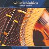

Celtic Lyrics Corner > Artists & Groups > Whistlebinkies > Timber Timbre > Eilean Scalpaigh Na Hearadh
|  | Eilean Scalpaigh Na Hearadh |
| Credits : | Gilleasbuig Grannd; lyrics by Iain Moireasdan |
| Appears On : | Timber Timbre |
| Language : | Gàidhlig (Scottish Gaelic) |
| Lyrics : | English Translation : |
| Eilean Scalpaigh na Hearadh | Island of Scalpay, Harris |
| Eilean maiseach mo ghràidh | My beloved, beautiful island |
| Eilean cùbhraidh nam beanna | Sweet island of mountains |
| Nan gleanna 's nan càrn | Of glens and rocks |
| Far an robh mi o m'òig | Where I used to, since my youth |
| Air bheag eòlais nan càs | And knowing little of hardship |
| Falbh nan cluaineagan bòidheach | Traverse the beautiful pastures |
| Ann an òb Cheann a' Bhàigh | In the inlet of Ceann a' Bhàigh |
| Rubha Glas a tha bòidheach | Beautiful Rubha Glas |
| Thogadh òg ann mi suas | There I was raised |
| Siud mo rogh' àite còmhnaidh' | There is my choice of a place |
| 'M fianais mhórthonn a' chuain | To live by the great ocean waves |
| 'G éisdeachd alltan a' bhearraidh | Listening to the streamlet from the ridge |
| Ruith na dheannaibh a-nuas | Running speedily down |
| 'N àm éirigh is laighe | When rising and going to bed |
| Ceòl na mara nam chluais | The music of the sea in my ears |
| Meall Chailbost tha sgiamhach | Fair Meall Chailbost |
| Àite feurach na spréidh | Grassy place of cattle |
| Siud an sealladh as brèagha | That is the most beautiful sight |
| Tha fo iarmailt na gréin | Under the heavens |
| Faicinn uain anns gach bealach | Seeing lambs in every pass |
| Aotrom ealant' a' leum | Leaping lightly and nimbly |
| Eòin an t-sléibh 's iad ri caithream | Birds of the hills singing joyfully |
| Air gach bearradh is geug | On every ridge and branch |
| Tìr nan òganach gasda | Land of strong young men |
| Tìr nan gaisgeach 's nan sàr | Of warriors and heroes |
| Tìr nam maraichean tapaidh | Land of brave mariners |
| Càite facas nas fheàrr | None better can be found |
| Tìr nan òighean tha maiseach | Land of beautiful maidens |
| Cliùiteach, faic'leach nan gnàths | Renowned and modest in their ways |
| Ann an grinneas 's an dealbha | In elegance and appearance |
| Fhuair iad ainm anns gach àit' | They have gained fame everywhere |
| Soraidh slàn leis an eilean | Farewell to the island |
| Eilean maiseach an fhraoich | Beautiful island of the heather |
| Eilean suairce na Gàidhlig | Generous Gaelic island |
| Far an d'àraicht' na laoich | Where heroes were raised |
| Guma slàn leis gach càrnan | Farewell to every little rock |
| Gach tràigh agus caol | Every branch and every stretch of water |
| Siud mo dhùrachd 's mo bheannachd | That is my wish and my blessing |
| Do dh'eilean Scalpaigh mo ghaoil | To my beloved island of Scalpay |